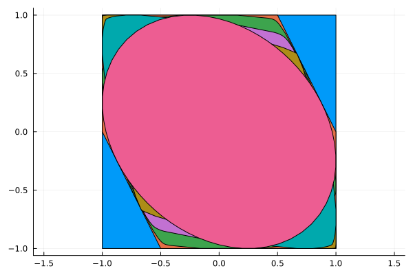
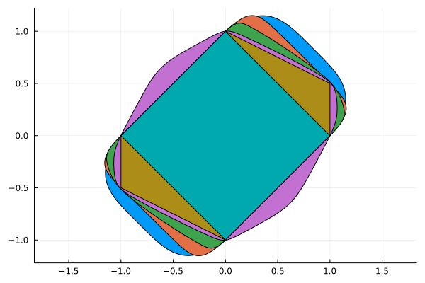

Controlled Invariant Set


In this example, we compute the maximal (resp. minimal) controlled invariant set contained in the square with vertices $(\pm 1, \pm 1)$ for the system
\[\begin{aligned} v_{k+1} & = v_k + a_k \Delta t\\ a_{k+1} & = u_k \end{aligned}\]
using the technique developed in [LTJ18].
The system is $x_{k+1} = A x_k + B u_k$ where $B = (0, 1)$ and
\[A = \begin{bmatrix} 1 & \Delta t\\ 0 & 0 \end{bmatrix}.\]
As shown in [LTJ18], a set $S$ is controlled invariant if
\[\begin{bmatrix} 1 & \Delta t \end{bmatrix} S \subseteq \begin{bmatrix} 1 & 0 \end{bmatrix} S.\]
[LTJ18] B. Legat, P. Tabuada and R. M. Jungers. Computing controlled invariant sets for hybrid systems with applications to model-predictive control. 6th IFAC Conference on Analysis and Design of Hybrid Systems ADHS 2018, 2018.
using Polyhedra
h = HalfSpace([1, 0], 1.0) ∩ HalfSpace([-1, 0], 1) ∩ HalfSpace([0, 1], 1) ∩ HalfSpace([0, -1], 1)
□ = polyhedron(h)Polyhedron DefaultPolyhedron{Float64, Polyhedra.Intersection{Float64, Vector{Float64}, Int64}, Polyhedra.Hull{Float64, Vector{Float64}, Int64}}:
4-element iterator of HalfSpace{Float64, Vector{Float64}}:
HalfSpace([1.0, 0.0], 1.0)
HalfSpace([-1.0, 0.0], 1.0)
HalfSpace([0.0, 1.0], 1.0)
HalfSpace([0.0, -1.0], 1.0)We need to pick an SDP solver, see here for a list of available ones.
using SetProg
import Hypatia
sdp_solver = optimizer_with_attributes(Hypatia.Optimizer, MOI.Silent() => true)
Δt = 0.5
A = [1.0 Δt]
E = [1.0 0.0]1×2 Matrix{Float64}:
1.0 0.0Ellipsoidal template
We first look for the largest controlled invariant ellipsoid contained in the square.
model = Model(sdp_solver)
@variable(model, S, Ellipsoid(symmetric=true))
@constraint(model, S ⊆ □)
@constraint(model, A * S ⊆ E * S)
@objective(model, Max, nth_root(volume(S)))
optimize!(model)
@show solve_time(model)
@show termination_status(model)
@show objective_value(model)
ell = value(S)SetProg.Sets.Polar{Float64, SetProg.Sets.Ellipsoid{Float64}}(SetProg.Sets.Ellipsoid{Float64}([0.9999999618071269 -0.2500000191226069; -0.2500000191226069 0.9999999322081451]))Polynomial sublevel sets
To allow for tighter approximations, we now use sublevel sets of polynomials of degree $d$. The L1_heuristic objective is a tractable proxy for the volume; see Section 4.2 of [L20] for details.
[L20] Legat, B. (2020). Set programming : theory and computation. Ph.D. thesis, UCLouvain.
function Sd(d)
model = Model(sdp_solver)
@variable(model, S, PolySet(degree=d, convex=true, symmetric=true))
@constraint(model, S ⊆ □)
@constraint(model, A * S ⊆ E * S)
@objective(model, Max, L1_heuristic(volume(S), [1.0, 1.0]))
optimize!(model)
@show solve_time(model)
@show termination_status(model)
@show objective_value(model)
return value(S)
endSd (generic function with 1 method)We compute the maximal controlled invariant sublevel set for several degrees.
S4 = Sd(4)
S8 = Sd(8)
S12 = Sd(12)
S16 = Sd(16)
S20 = Sd(20)
S22 = Sd(22)SetProg.Sets.Polar{Float64, SetProg.Sets.ConvexPolySet{Float64, StarAlgebras.SubBasis{MultivariateBases.Polynomial{Monomial, Vector{DynamicPolynomials.Variable{DynamicPolynomials.Commutative{DynamicPolynomials.CreationOrder}, MultivariatePolynomials.Graded{MultivariatePolynomials.LexOrder}}}, Vector{Int64}}, Int64, Vector{Int64}, StarAlgebras.MappedBasis{MultivariateBases.Polynomial{Monomial, Vector{DynamicPolynomials.Variable{DynamicPolynomials.Commutative{DynamicPolynomials.CreationOrder}, MultivariatePolynomials.Graded{MultivariatePolynomials.LexOrder}}}, Vector{Int64}}, Vector{Int64}, MultivariatePolynomials.ExponentsIterator{MultivariatePolynomials.Graded{MultivariatePolynomials.LexOrder}, Nothing, Vector{Int64}}, MultivariateBases.Variables{Monomial, Vector{DynamicPolynomials.Variable{DynamicPolynomials.Commutative{DynamicPolynomials.CreationOrder}, MultivariatePolynomials.Graded{MultivariatePolynomials.LexOrder}}}}, typeof(MultivariatePolynomials.exponents)}, Vector{Vector{Int64}}}, Float64}}(SetProg.Sets.ConvexPolySet{Float64, StarAlgebras.SubBasis{MultivariateBases.Polynomial{Monomial, Vector{DynamicPolynomials.Variable{DynamicPolynomials.Commutative{DynamicPolynomials.CreationOrder}, MultivariatePolynomials.Graded{MultivariatePolynomials.LexOrder}}}, Vector{Int64}}, Int64, Vector{Int64}, StarAlgebras.MappedBasis{MultivariateBases.Polynomial{Monomial, Vector{DynamicPolynomials.Variable{DynamicPolynomials.Commutative{DynamicPolynomials.CreationOrder}, MultivariatePolynomials.Graded{MultivariatePolynomials.LexOrder}}}, Vector{Int64}}, Vector{Int64}, MultivariatePolynomials.ExponentsIterator{MultivariatePolynomials.Graded{MultivariatePolynomials.LexOrder}, Nothing, Vector{Int64}}, MultivariateBases.Variables{Monomial, Vector{DynamicPolynomials.Variable{DynamicPolynomials.Commutative{DynamicPolynomials.CreationOrder}, MultivariatePolynomials.Graded{MultivariatePolynomials.LexOrder}}}}, typeof(MultivariatePolynomials.exponents)}, Vector{Vector{Int64}}}, Float64}(22, GramMatrix with row/column basis:
SubBasis{Monomial}([x[2]^11, x[1]*x[2]^10, x[1]^2*x[2]^9, x[1]^3*x[2]^8, x[1]^4*x[2]^7, x[1]^5*x[2]^6, x[1]^6*x[2]^5, x[1]^7*x[2]^4, x[1]^8*x[2]^3, x[1]^9*x[2]^2, x[1]^10*x[2], x[1]^11])
And entries in a 12×12 MultivariateMoments.SymMatrix{Float64}:
0.9829928698726381 -1.2523067086372826 … -0.003193926256492639
-1.2523067086372826 100.07544700477267 -0.34669582947985095
-15.150173029569842 -48.42570962949563 0.5247542749305139
9.967914490362544 -490.4396332798 4.530156400597882
22.251155768537416 182.1784388576875 2.606757038361525
-8.83939727291908 305.85107714809595 … 2.315688146735799
-3.595304911140074 -55.16482815192847 -26.441839749561957
-1.848001908184652 -4.216811606737769 -12.345360173822957
0.1425495168226463 -40.616088740716386 29.887585261212994
0.910136949162567 5.778486258768874 -1.908546078634169
-0.15982466334156537 3.112565743816297 … -5.225119275651406
-0.003193926256492639 -0.34669582947985095 0.983564199243476, [454.14270588123895 -52.59688176274595 … 18.500567377182467 -32.828975834472175; -52.59688176274595 139.55020189128845 … -27.33168740498174 50.52292415982727; … ; 18.500567377182467 -27.33168740498174 … 122.47405883600004 -219.45500957721475; -32.828975834472175 50.52292415982727 … -219.45500957721475 454.4066600504881]))Plotting
Below are reference polytopes used in the plots: the maximal controlled invariant polytope mci and its polar.
mci = □ ∩ HalfSpace([1.0, 0.5], 1.0) ∩ HalfSpace([-1.0, -0.5], 1.0)
polar_□ = polar(□)
polar_mci = polar(mci)Polyhedron DefaultPolyhedron{Float64, Polyhedra.Intersection{Float64, Vector{Float64}, Int64}, Polyhedra.Hull{Float64, Vector{Float64}, Int64}}:
6-element iterator of Vector{Float64}:
[1.0, 0.0]
[-1.0, 0.0]
[0.0, 1.0]
[0.0, -1.0]
[1.0, 0.5]
[-1.0, -0.5]We plot the polynomial sublevel sets together with the square and mci.
using Plots
plot(ratio=:equal)
plot!(□)
plot!(mci)
plot!(S22)
plot!(S16)
plot!(S8)
plot!(S4)
plot!(ell)
And the corresponding polar plot:
plot(ratio=:equal)
plot!(SetProg.Sets.polar(S4); npoints=512)
plot!(SetProg.Sets.polar(S8); npoints=512)
plot!(SetProg.Sets.polar(S16); npoints=512)
plot!(SetProg.Sets.polar(S22); npoints=512)
plot!(polar_mci)
plot!(polar_□)
This page was generated using Literate.jl.